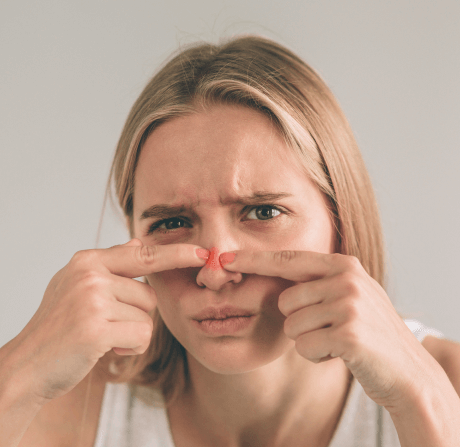
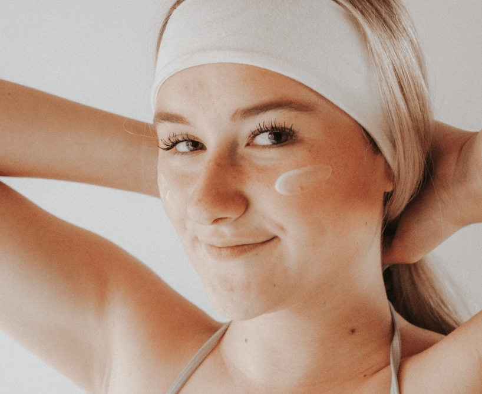

Можно ли выдавливать прыщи?

11.02.2023

1 022

6 мин
Содержание
Что делать, если появился прыщ
«Руки чешутся выдавить» – обычная реакция на появление покраснения с нарывом. Но, прежде чем расположиться у зеркала и устранить проблему, нужно кое-что знать о ней.
Любой прыщ – это воспалительный процесс, который вызван излишней выработкой подкожного сала с утолщением рогового слоя. В результате формируются комедоны открытые (черные точки) или закрытые (в виде воспаления с белым нарывом). Последние вызывают особенное желание немедленно расквитаться с ними6.
Акне подвержены преимущественно подростки, переживающие гормональные изменения, а также люди, которым различные формы этого заболевания достались «по наследству». Но это не значит, что все остальные имеют иммунитет против этих воспалений.
Появлению комедонов, особенно при чувствительной коже, способствуют следующие факторы:
- Ультрафиолетовое излучение;
- Косметические средства на основе масел;
- Фактор стресса;
- Механическая травма, в том числе и самоповреждение1.
Почему еще нельзя давить прыщи

В процессе образования комедона первичным фактором является воспаление.
Оно предшествует аномальному утолщению верхнего слоя кожи и образованию микрокомедона – очага воспаления,
который нельзя увидеть невооруженным глазом. Спустя время мы уже можем наблюдать привычный нам нарыв.
Выдавливая прыщ, мы убираем часть его содержимого, но не устраняем очаг воспаления, который, в принципе,
невозможно удалить механически. На него можно воздействовать только специальными дерматологическими средствами.
Прежде всего – адапаленсодержащими препаратами.
Для устранения микрокомедонов пациентам при акне любой тяжести показаны бережное очищение и увлажнение
с использованием средств дерматокосметики, восстанавливающих барьерные свойства кожи, обладающих
противовоспалительным действием и не содержащих раздражающих кожу компонентов6.
Кроме того, выдавливание приводит к появлению пигментации и рубцов.
В косметологии это называется постакне. Кроме того, механические повреждения кожных покровов могут привести к тяжелым осложнениям, таким как тромбофлебит вен лица.
Это заболевание развивается на фоне попадания в кровь инфекции. Надавливая на пораженный участок,
человек может повредить венозный сосуд, и это наиболее частая причина развития тромбофлебита4.
Еще одна причина, почему нельзя выдавливать комедоны, – это образование сосудистых звездочек. К их появлению может привести все то же механическое поражение.
Не стоит вручную избавляться от высыпаний в области носогубного треугольника.
Это место, в котором сосредоточено большое количество сосудов, соединенных с мозгом, и попадание инфекции может быть особенно опасно2.
No make-up диктует: не перегружайте кожу лица декоративной косметикой, будьте собой и не стесняйтесь.
Больше нет необходимости скупать тоннами тональные кремыа и консилеры.
Достаточно иметь в своей косметичке качественную уходовую косметику, а в аптечке хорошие лечебные средства.
Как избавиться от акне

С вопросом «Можно ли давить прыщи на лице?» мы разобрались. Теперь давайте разберемся, как бороться с высыпаниями, если силовые методы не подходят.
Начать следует с ежедневного ухода. При акне любой тяжести требуется бережное очищение и увлажнение с использованием средств дерматокосметики, восстанавливающих барьерные свойства кожи, без содержания спирта.
При появлении сыпи, особенно если это происходит регулярно, следует обратиться к врачу-дерматовенерологу или косметологу. Врач назначит адекватное лечение. Как правило, это наружная терапия ретиноидами, то есть препаратами, которые снижают количество кожного сала. При тяжелой форме акне подключается системная терапия: прием антибиотиков или гормональных препаратов6.
Наконец, кабинет косметолога – то место, куда следует отправиться, чтобы не навредить себе. Сегодня существуют бережные процедуры, которые помогают избавиться от недуга, такие как атравматичная чистка лица. Это чистка без механического воздействия, с помощью специальных косметических средств. Шаг за шагом косметолог наносит нужные составы, постепенно очищая лицо.
Чтобы не выдавливать прыщи, соблюдайте три простых правила
Если у вас чувствительная кожа и высыпания могут настигнуть в самый неподходящий момент, запаситесь специальными средствами для дерматологического макияжа. Эта же косметика будет являться дополнением к наружной терапии. Стоит использовать:
- Эмульсионные тональные средства;
- Камуфлирующую косметику.
- Ежедневный бережный уход, очищение и увлажнение кожи;
- Коррекция питания, снижение потребления сладкого;
- Питьевой режим;
- Чистота предметов мебели и быта, нельзя оставлять пыль;
- Снижение пребывания на солнце и использование солнцезащитного крема.
Литература:
- Анисимова М.Ю. Акне (ACNE VULGARIS) с позиции доказательной медицины // Вестник репродуктивного здоровья. – 2010.
- Аравийская Е.Р., Соколовский Е.В. Руководство по дерматокосметологии. – СПб: ООО «Издательство Фолиант», 2008.
- Ахтямов С.Н., Бутов Ю.С. Практическая дерматокосметология. – Москва: «Медицина», 2003.
- Кривошеев В.В. Тромбофлебит вен лица // Российская стоматология. – 2015.
- Кубанова А.А., Аравийская Е.Р., Соколовский Е.В. и др. Системное лечение тяжелых форм акне: опыт использования изотретиноина в Российской Федерации // Вестник дерматологии и венерологии. – 2013.
- Российское общество дерматовенерологов и косметологов. Клинические рекомендации.